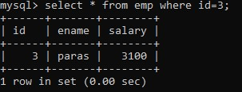
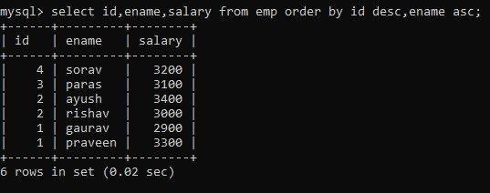
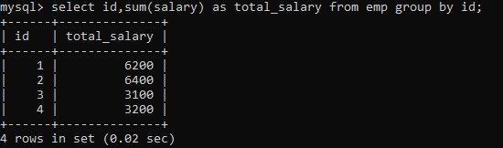
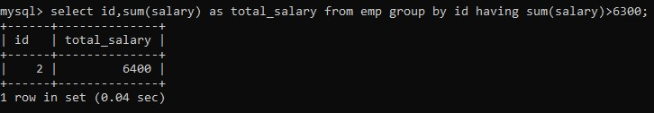

CLAUSE
In MySQL, a clause is a part of a SQL statement that provides additional information about the operation being performed. A clause typically follows the main keywords in a SQL statement and specifies conditions, filters, and other criteria that affect the outcome of the query.
1.WHERE clause
The WHERE clause is a commonly used clause in MySQL that is used to filter rows from a table based on specified conditions. It follows the FROM clause in a SELECT statement and can include one or more conditions that must be satisfied for a row to be included in the result set.
SYNTAX = select column_list from table_name where condition;
EXAMPLE

2.ORDER BY clause
The ORDER BY clause is a clause in MySQL that is used to sort the result set of a SELECT statement based on one or more columns. It follows the WHERE clause in a SELECT statement and can include one or more columns to sort on, along with the order in which they should be sorted.
SYNTAX = SELECT column1, column2, column3
FROM table_name
ORDER BY column1 ASC, column2 DESC;
EXAMPLE

3.GROUP BY clause
The GROUP BY clause is a clause in MySQL that is used to group rows in a result set based on one or more columns. It follows the WHERE clause in a SELECT statement and can include one or more columns to group on.
SYNTAX = select column-list,group_function(column) from table_name [group by group_by_expression]
EXAMPLE

4.HAVING clause
The HAVING clause is a clause in MySQL that is used to filter the results of a GROUP BY clause based on a condition. It follows the GROUP BY clause in a SELECT statement and can include one or more conditions to filter on.
SYNTAX = select column-list,group_function(column) from table_name [ having having_expression]
EXAMPLE
